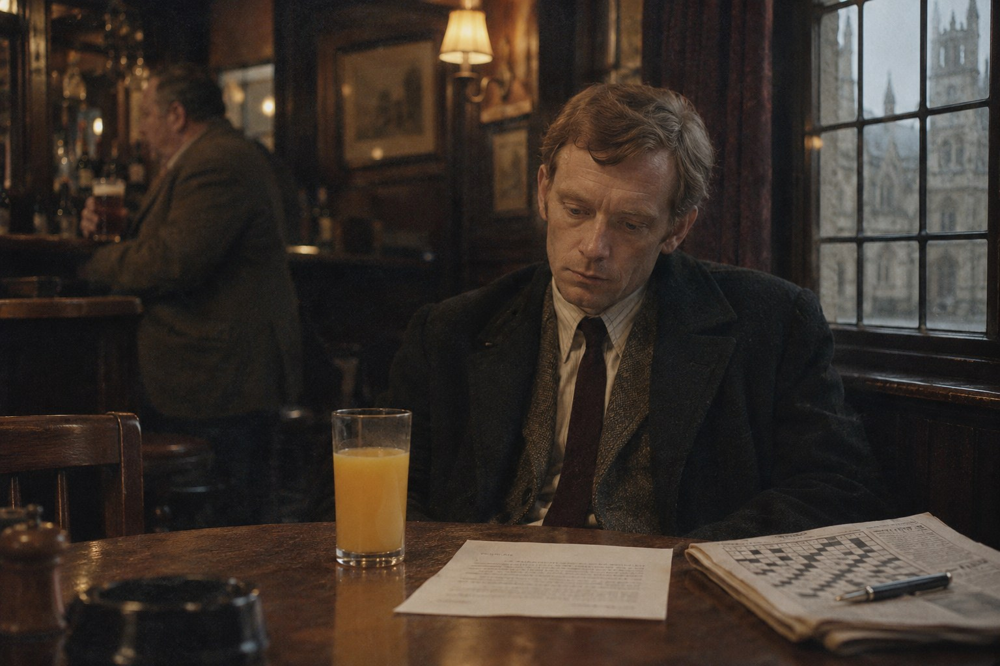

Точка с запятой

Глава первая
Nunc est bibendum.
(Теперь надо пить.)
— Гораций, «Оды», I, 37
В четверг шестого декабря 1973 года, на четвёртой неделе чрезвычайного положения, когда уличные фонари по всей стране велено было приглушить, а в конторах запрещалось топить выше шестидесяти трёх градусов по Фаренгейту (что составляет семнадцать по Цельсию и для англичанина означает лишь необходимость надеть второй свитер), сержант уголовной полиции Морс сидел в углу «Орла и ребёнка» на Сент-Джайлс перед стаканом апельсинового сока. Он смотрел на этот стакан с выражением человека, которому предложили прослушать «Гибель богов» в переложении для губной гармоники.
Сок был уже вторым. Первый он выпил быстро, как пьют лекарство, а над вторым раздумывал, поскольку кроссворд в «Таймс» был решён ещё до одиннадцати (за девять с половиной минут, что для четверга было посредственно), и занять руки стало нечем.
— Не понимаю я тебя, дружище, — сказал Стрейндж, осторожно опуская на стол пинту горького, а на стул собственный немалый вес, который стул принял с явным неудовольствием. — Второй год уже. Мог бы и позволить себе одну.
Морс не ответил. Он давно заметил, что люди, уговаривающие его выпить, делятся на тех, кому неловко пить в одиночку, и на тех, кто искренне желает ему добра, и что вторые гораздо опаснее. Стрейндж, женатый с прошлого лета и оттого расположенный желать добра всему человечеству, относился, несомненно, ко вторым.
— Ты это видел? — спросил вместо ответа Морс и подвинул через стол листок, отпечатанный на машинке.
Письмо пришло в участок с утренней почтой, в дешёвом конверте с оксфордским штемпелем, и содержало следующее:
В полицию города Оксфорда.
Считаю своим долгом сообщить, что доктор Карсуэлл из колледжа Лонсдейл по ночам выносит из колледжа то, что ему не принадлежит. Я видел это трижды своими глазами; в последний раз в прошлую пятницу, после одиннадцати. Я получил от одного человека сведения, что это продолжается с октября. Спросите его, что лежит в коробках.
Доброжелатель
Стрейндж прочёл его дважды, шевеля губами (привычка, от которой его не избавили ни школа, ни годы службы), и пожал плечами.
— Анонимка как анонимка. Писал какой-то малограмотный. Вон, «получил» с ошибкой. И «колледж» тоже.
Автор письма и в самом деле написал recieved вместо received, то есть нарушил правило о порядке букв i и e, которое в английских школах вбивают в детей раньше таблицы умножения и, как правило, с большим успехом. Слово же college он оба раза украсил лишней буквой d, так что получалось нечто среднее между учебным заведением и карнизом.
— Именно, — сказал Морс, и в голосе его появилось то удовольствие, которое Стрейндж за восемь лет знакомства научился распознавать и которого слегка побаивался. — С ошибкой. А во второй фразе стоит точка с запятой, и стоит она там, где ей положено стоять. Запятые тоже все на местах, включая ту, что перед придаточным, а её пропускает половина выпускников этого университета. Я не знаю ни одного малограмотного человека, который умел бы пользоваться точкой с запятой. Сказать по совести, я и среди грамотных знаю таких немного.
— И что это значит?
— Это значит, что нам пишет образованный человек, которому очень хочется, чтобы мы сочли его необразованным. Он вспомнил, что неучи путают буквы, и забыл, что знаков препинания они не ставят вовсе. — Морс поднял стакан, посмотрел сквозь него на тусклое окно и поставил обратно. — В правописании он разбирается лучше, чем во вранье.
— Ну, это уже кое-что, — сказал Стрейндж, который предпочитал выводы, пригодные для занесения в протокол. — Значит, кто-то из тамошних профессоров сводит счёты с другим профессором. Старик будет в восторге.
Стариком в участке на Касл-гейт звали старшего инспектора Хиллиана, и восторг был последним из чувств, которых от него можно было ожидать в эту зиму.
— Старик отдал мне это письмо, чтобы я не путался под ногами, — сказал Морс. — Он не будет в восторге. Он будет доволен, что я занят.
Стрейндж посмотрел на него поверх кружки с тем сочувствием, которое не решаются высказать вслух, и ничего не ответил. За соседним столом кто-то засмеялся, хозяин паба звякнул стаканами, и сержант Морс допил свой сок с видом человека, исполняющего долг.
В главном же своём выводе он, как выяснилось двумя неделями позже, ошибался: из двоих людей, приложивших руку к этому письму, один не умел лгать вовсе, зато другой умел это лучше всех, с кем Морсу предстояло встретиться той зимой.
Глава вторая
De minimis non curat lex.
(Закон не занимается пустяками.)
— Юридическая максима
Полицейский участок на Касл-гейт в ту зиму жил одним делом, и дело это не имело никакого отношения ни к профессорам, ни к коробкам. С осени на стене большой комнаты второго этажа висела карта восточной окраины города, утыканная булавками, а рядом с ней школьная фотография восьмилетней девочки, на которую входящие старались не смотреть и на которую всё равно смотрели. Булавок с каждой неделей становилось больше, толку от них не прибавлялось, и люди, работавшие в этой комнате, разговаривали между собой вполголоса, как разговаривают в доме, где кто-то тяжело болен.
Сержанта Морса в эту комнату не звали. Никто не сказал ему об этом прямо (в полиции долины Темзы, как и во всякой английской службе, самые важные вещи прямо не говорились), но когда он весной прошлого года вернулся из продолжительного отпуска, причина которого была известна всему участку, включая буфетчицу, обнаружилось, что дела ему достаются особого сорта: кража велосипедов у колледжа Магдалины, жалоба викария на осквернение церковной ограды, пропавшая и через два дня нашедшаяся у тётки в Рединге продавщица. Его берегли. Он понимал это, и понимание было значительно хуже самих велосипедов.
Старший инспектор Хиллиан, грузный человек с лицом, на котором усталость давно стала постоянной чертой наряду с носом и подбородком, выслушал его в четверть третьего, стоя в дверях своего кабинета и не приглашая войти.
— Точка с запятой, — повторил он без выражения.
— Да, сэр. Во второй фразе.
— И из этого следует, что писал учёный человек.
— Из этого следует, сэр, что писал человек, получивший образование и желающий это скрыть. Круг таких людей в Лонсдейле невелик, а тех из них, кто может по ночам наблюдать за лестницей доктора Карсуэлла, ещё меньше. Я полагаю, что назову вам имя к понедельнику.
Хиллиан помолчал. За его спиной на столе лежали три папки, и Морс знал, что во всех трёх одно и то же и что старший инспектор читает их по ночам, потому что днём не хватает времени, а ночью всё равно не спится.
— Имя мне не нужно, Морс, — сказал он наконец. — Мне нужно, чтобы ректор Лонсдейла не позвонил главному констеблю. Сходите туда. Поговорите с этим Карсуэллом, вежливо. Если он скажет, что ничего не выносил, поблагодарите и уйдите. Если скажет, что выносил, спросите что, запишите и тоже уйдите. Кто у кого из них украл книжку, меня до Рождества не интересует.
— А если это не книжка, сэр?
— Тогда это будет первый случай в истории университета. — Хиллиан уже поворачивался к столу. — И, Морс.
— Сэр?
— Как вы?
Вопрос был задан тем же тоном, каким спрашивают о погоде, и именно поэтому Морс расслышал в нём всё, что в него было вложено.
— Превосходно, сэр.
— Хорошо, — сказал Хиллиан и закрыл дверь.
В коридоре Морса дожидался сержант Досон, человек одних с ним лет и одного звания, во всём остальном отличавшийся от него настолько, насколько это возможно для двух англичан, служащих в одном здании. Досон был аккуратен, честолюбив и никогда не ошибался в написании фамилий начальства. В большую комнату на втором этаже он входил без стука.
— Говорят, ты теперь по анонимкам, — сказал Досон. — Серьёзная работа. Смотри не надорвись.
— Постараюсь, — ответил Морс. — Кстати, Досон, в твоём вчерашнем рапорте слово immediately написано с одной m. Я подумал, тебе захочется знать, пока его не прочёл кто-нибудь грамотный.
Это была неправда (рапорта он не видел), но Досон покраснел и ушёл проверять, из чего следовало, что удар пришёлся в цель, а также что в орфографии сержанта Досона имелись места, в которых он сам не был уверен.
Вернувшись к своему столу у окна, выходившего на глухую стену соседнего склада, Морс достал письмо и перечёл его в десятый раз. Потом он поднёс его к лампе и перечёл в одиннадцатый, теперь уже глядя не на слова, а на буквы, и заметил то, чего не замечал прежде: строчная e на всём протяжении письма стояла чуть выше своих соседок, как стоит в строю человек, которому жмут сапоги.
Машинку с такой буквой нетрудно узнать, если знать, где искать. Сержант Морс полагал, что знает.
Глава третья
Лексикограф — составитель словарей, безобидный труженик.
— Сэмюэл Джонсон, «Словарь английского языка» (1755)
Колледж Лонсдейл, основанный в царствование Генриха Шестого и с тех пор, по мнению недоброжелателей, не предпринявший ничего столь же решительного, устроен так же, как все старые оксфордские колледжи: в нём нет коридоров. Комнаты его выходят на лестницы, лестницы открываются прямо во двор, и к каждой лестнице приставлен служитель, которого здесь зовут скаутом. Скаут убирает комнаты, носит уголь, будит по утрам тех, кто просил себя будить, и знает о своих джентльменах больше, чем их врачи и духовники, вместе взятые.
Скаут седьмой лестницы, сутулый старик в зелёном суконном фартуке, мыл ступени, когда Морс в пятницу, в начале двенадцатого, поднимался к доктору Карсуэллу. Он посторонился, прижав к груди щётку, и посмотрел на гостя с тем напряжённым вниманием, с каким смотрят на человека, которого ждали и которому не рады. Морс это внимание отметил и тут же объяснил его себе неверно, решив, что полицейского на этой лестнице узнают по ботинкам.
Доктор Эдмунд Карсуэлл оказался высоким сухим человеком лет шестидесяти, с очень чистыми руками и голосом, привыкшим к тому, что его не перебивают. Комната его была заставлена книгами до потолка, а там, где кончались книги, начинались узкие картонные коробки, какие употребляют для библиотечных каталогов. Они стояли на подоконнике, на каминной полке и в два ряда на полу вдоль стены, и на каждой была наклейка с буквами: Fa — Fe, Fi — Fl, Ga — Gl.
— Вы смотрите на мои коробки, сержант, — сказал Карсуэлл. — Полагаю, из-за них вы и пришли. Ректор был так любезен, что предупредил меня.
Морс, собиравшийся подойти к делу постепенно, протянул ему письмо. Карсуэлл прочёл его, держа листок на отлёте, как держат вещь не вполне чистую, и вернул.
— «Колледж» через d, — заметил он. — Прелестно. В семнадцатом веке так, между прочим, и писали, но не думаю, что ваш корреспондент на это рассчитывал. Что ж, он совершенно прав. Я действительно выношу по вечерам коробки, и действительно с октября. Это мои собственные карточки, и везу я их в собственный дом на Банбери-роуд, где, в отличие от этой комнаты, позволено топить.
— Карточки, сэр?
— Словарь, сержант. — Он произнёс это слово так, как другие произносят имя жены. — «Словарь говоров долины Верхней Темзы». Двадцать два года работы и сорок с лишним тысяч карточек, на каждой из которых записано слово, его значение, место и год, где и когда оно было услышано, и имя того, кто его услышал. Корректура первого тома придёт из типографии до Рождества. Вы, вероятно, не знаете, что такое nesh.
— Зябкий, сэр, — сказал Морс. — О человеке, который плохо переносит холод. Слово древнее, а этой зимой ещё и своевременное.
Впервые с начала разговора доктор Карсуэлл посмотрел на него с интересом. Интерес этот, впрочем, был того рода, какой вызывает у зоолога собака, сосчитавшая до пяти.
— Вы учились здесь?
— Некоторое время, сэр.
— И не кончили. — Это не было вопросом. — Жаль. Хереса?
Графин стоял на столике у камина, между коробками Ha — He и Hi — Hu, и вино в нём при свете лампы было того тёмно-золотого цвета, который сержант Морс помнил очень хорошо. Он помнил также вкус, и первую тёплую минуту после глотка, и то, что бывало через несколько часов и через несколько лет.
— Благодарю вас, нет. Я на службе.
— Разумеется, — сказал Карсуэлл и налил одну рюмку, себе.
В эту минуту в дверь постучали, и вошла женщина лет пятидесяти, небольшая, прямая, в сером шерстяном костюме, с папкой в руках. Она положила папку на стол, не взглянув на гостя, и Морс успел заметить только, что волосы у неё уложены с той безупречностью, какой добиваются женщины, уверенные, что на них никто не смотрит.
— Письма на подпись, доктор Карсуэлл. И звонили из типографии: гранки титульного листа будут восемнадцатого.
— Благодарю вас, мисс Марлоу. Сержант, это мисс Марлоу, секретарь колледжа, без которой ни колледж, ни словарь не просуществовали бы и недели. Мисс Марлоу, сержант из полиции интересуется моими коробками. Кто-то написал ему, что я краду их у самого себя.
Он засмеялся собственной шутке. Мисс Марлоу не засмеялась. Она посмотрела на коробки вдоль стены (Морсу показалось, что она их пересчитала) и сказала ровным голосом:
— Их стало меньше.
— Я перевожу их домой, Энид. Я вам говорил.
— Да, доктор Карсуэлл. Вы говорили.
Она вышла, притворив дверь так тихо, что щелчка замка не было слышно. Карсуэлл допил херес, поставил рюмку и заговорил о том, что анонимные письма суть неизбежное следствие всеобщего начального образования, но сержант Морс слушал его невнимательно.
Он думал о том, что человек, двадцать два года называвший свою помощницу «мисс Марлоу», при постороннем вдруг назвал её по имени, и что сделал он это в ту самую минуту, когда ему понадобилось, чтобы она замолчала.
Глава четвёртая
Littera scripta manet.
(Написанное остаётся.)
— Латинская пословица
В понедельник десятого декабря сержант Морс явился в привратницкую колледжа Лонсдейл в четверть десятого утра, то есть в час, когда порядочные учёные ещё завтракают, а непорядочные ещё спят, и провёл там сорок минут, из которых первые пять ушли на дело, а остальные тридцать пять на то, чтобы привратник перестал его бояться.
Дело заключалось в доске объявлений. Она висела под аркой ворот, напротив окошка привратницкой, и среди расписания богослужений в часовне, списка должников библиотеки и приглашения на заседание общества любителей колокольного звона Морс ещё в пятницу, уходя, заметил свежий листок. Листок был отпечатан на машинке и сообщал, что во исполнение правительственных мер по сбережению топлива лампы на лестницах с первой по девятую будут гореть через одну, а после полуночи выключаться вовсе, о чём членов колледжа и младших его обитателей просят помнить и соблюдать на ступенях осторожность.
Строчная e в этом объявлении стояла чуть выше строки. Морс насчитал её пятьдесят семь раз и все пятьдесят семь раз получил от этого удовольствие.
— Это мисс Марлоу печатала, — сказал привратник, которого звали Тидмарш и который сорок лет наблюдал из своего окошка, как джентльмены входят в ворота юношами и выходят епископами. — Всё, что на доске, идёт через контору. У нас так заведено.
— И машинка в конторе одна?
— Одна, сэр. «Империал», довоенная. Казначей каждый год обещает новую.
— А по вечерам контора заперта.
— С шести, сэр. Ключ у меня, вот на этом гвозде. Кому из членов колледжа нужно, тот берёт и расписывается в книге.
Книга лежала тут же, на конторке, толстая, в клеёнчатой обложке, и была разграфлена от руки. Морс перелистал её назад до конца ноября. Записей оказалось немного, потому что члены колледжа Лонсдейл по вечерам предпочитали конторе общую комнату с камином и портвейном, и почти все они были сделаны рукой казначея, бравшего ключ по пятницам. Но в понедельник третьего декабря, против восьми часов вечера, стояла другая подпись, размашистая, с росчерком, и тою же рукой было отмечено, что ключ возвращён в половине десятого.
— Доктор Трейл, — сказал Тидмарш, заглянув через его плечо. — Он сказал, что ему надо отпечатать рекомендации для своих учеников, а мисс Марлоу уже ушла.
Письмо, как помнил Морс, упоминало «прошлую пятницу», то есть тридцатое ноября, и было опущено в ящик не позже среды пятого. Понедельник третьего приходился точно между этими двумя днями. Он закрыл книгу с тем чувством, какое бывает у человека, вписавшего в кроссворд последнее слово, и не обратил внимания на то, что слово это подошло слишком легко.
Во дворе, у солнечных часов, которые в это декабрьское утро не показывали ничего, он увидел молодую женщину в длинном тёмно-синем пальто, с портфелем, набитым так, что замок не сходился. Она шла от седьмой лестницы и, поравнявшись с ним, остановилась сама.
— Вы тот полицейский, который знает слово nesh, — сказала она. — Доктор Карсуэлл рассказывал об этом за обедом в субботу. Он был поражён. Он считает, что за пределами этого двора его словарь не сможет прочесть никто.
— Сержант Морс.
— Хелен Эшби. Я из Сомервилла, а здесь бываю по понедельникам и пятницам: записываю для словаря произношение. Старики в деревнях за Уитни говорят так, как здесь говорили при королеве Анне, и умирают быстрее, чем я успеваю до них доехать.
Ей было, по оценке Морса, лет тридцать, у неё были серые глаза и та манера смотреть на собеседника прямо и чуть насмешливо, которая всегда действовала на него сильнее, чем ему хотелось бы. Он подумал, что надо спросить её о коробках, и спросил о другом.
— Скажите, мисс Эшби, доктор Трейл и доктор Карсуэлл в хороших отношениях?
Она засмеялась.
— Вы давно в Оксфорде, сержант?
— Достаточно давно.
— Тогда вы знаете, что здесь никто ни с кем не бывает в хороших отношениях дольше одного триместра. Но эти двое, пожалуй, превзошли обычай. Одиннадцать лет назад доктор Трейл напечатал рецензию на первую книгу доктора Карсуэлла. Я её читала; это лучшее, что написал доктор Трейл, и в ней нет ни одного доброго слова. А четыре года назад освободилось место профессора, и доктор Карсуэлл был в комиссии. Говорят, он не произнёс там ничего дурного. Он только спросил, сколько трудов опубликовал кандидат за последние десять лет, и подождал, пока все сосчитают.
— И с тех пор?
— С тех пор они сидят за высоким столом через одного человека и передают друг другу соль. — Она переложила портфель в другую руку. — Вы думаете, письмо написал он?
— Я ничего не думаю, мисс Эшби. Я собираю сведения.
— Это неправда, — сказала она весело. — Вы уже всё решили. У вас это написано на лице, как у моих студенток, когда они уверены, что знают ответ. Обычно они ошибаются.
Она кивнула ему и пошла к воротам, а Морс стоял у бесполезных солнечных часов и смотрел ей вслед дольше, чем требовалось для сбора сведений. Потом он вспомнил, что так и не спросил о коробках, и решил, что это подождёт.
Это было второй его ошибкой за утро, и из двух она обошлась дороже.
Глава пятая
Гончар завидует гончару, а плотник плотнику.
— Гесиод, «Труды и дни»
Доктор Джулиан Трейл принял сержанта Морса во вторник, в пятом часу, в комнатах на третьей лестнице, где было натоплено так, как не разрешало ни одно правительственное распоряжение, и пахло хорошим табаком. Это был полный розовый человек лет пятидесяти пяти, с маленькими руками и большим удовольствием от собственного голоса, из тех оксфордских преподавателей, о которых студенты рассказывают анекдоты спустя тридцать лет после выпуска и чьих книг не может вспомнить никто.
Он прочёл письмо один раз, быстро, и вернул его с улыбкой.
— Очаровательно. Вы, разумеется, думаете, что это сочинил я.
— Почему вы так решили, сэр?
— Потому что вы пришли ко мне, а не к кому-нибудь другому, и потому что в привратницкой лежит книга, где я имел неосторожность расписаться. Тидмарш сообщил мне о вашем визите раньше, чем вы дошли до ворот. В этом колледже, сержант, новости распространяются быстрее света, что, впрочем, нетрудно, поскольку света у нас теперь почти нет.
Он предложил Морсу кресло и сигарету. От сигареты Морс отказался; от графина, стоявшего на бюро, он отказался тоже, и отказ этот дался ему легче, чем в комнатах Карсуэлла, потому что в графине был портвейн, которого он никогда не любил.
— Давайте я избавлю вас от труда, — продолжал Трейл, усаживаясь напротив. — Ненавижу ли я Карсуэлла? Всей душой и уже одиннадцать лет, с перерывом на те полгода, когда он болел плевритом и я его жалел. Желаю ли я ему неприятностей? Ежедневно, кроме воскресений. Был ли я в конторе вечером третьего числа? Был, полтора часа, и отпечатал четыре рекомендательных письма двумя пальцами, отчего до сих пор болит правый указательный. Написал ли я вот это? — Он кивнул на листок. — Нет. И если вы хоть немного разбираетесь в людях, вы сами понимаете почему.
— Объясните, сэр.
— Здесь две орфографические ошибки. Я не способен сделать орфографическую ошибку, сержант, даже нарочно, даже ради того, чтобы погубить Эдмунда Карсуэлла. Рука не поднимется. Это физическое свойство, вроде неумения шевелить ушами. — Он улыбнулся ещё шире. — Кроме того, анонимное письмо есть жанр, а в каждом жанре я стараюсь достигать совершенства. Моё письмо было бы много лучше.
Морс слушал его и думал, что именно так и должен говорить виновный человек, если он умён: признать всё, чего нельзя отрицать, и обратить в шутку то единственное, что отрицать необходимо. Он думал также, что точка с запятой во второй фразе письма принадлежит руке, которая не способна на ошибку даже нарочно, и что доктор Трейл, сам того не замечая, только что описал автора с большой точностью.
Человеку, уверенному в своей правоте, всякое свидетельство кажется подтверждением; невиновность подозреваемого в том числе.
— Что в коробках, вы знаете? — спросил он.
— Карточки. Сорок тысяч бумажек, на которых записано, как в деревне Бамптон называют навозную кучу. Он возит их домой, и правильно делает. — Трейл помолчал, и лицо его на мгновение стало другим, менее розовым. — Хотя я бы на вашем месте спросил, сержант, не куда он их возит, а от кого увозит. Но это, вероятно, уже не полицейский вопрос.
— Что вы имеете в виду, сэр?
— Ровным счётом ничего. Я сплетник, это известно всему университету. Портвейна? Ах да, вы ведь не пьёте. Как это, должно быть, утомительно.
Наутро Морс изложил всё это старшему инспектору Хиллиану, выбрав минуту, когда тот спускался по лестнице, и уложившись в два пролёта. Доктор Карсуэлл, сообщил он, выносит собственные бумаги, жаловаться ни на кого не желает и просит полицию более не беспокоиться. Автор письма с высокой вероятностью установлен, однако сознаваться не намерен, а доказать авторство можно, лишь изъяв машинку из конторы колледжа и отправив её на экспертизу.
— Машинку не трогать, — сказал Хиллиан, не останавливаясь. — Письмо в папку, папку в шкаф. Вы хорошо поработали, Морс.
Последняя фраза была сказана так, как говорят её ребёнку, принёсшему из школы рисунок, и Морс, оставшись на площадке, некоторое время разглядывал перила.
В субботу он столкнулся на Крытом рынке с Джоан Стрейндж. Она выбирала у прилавка гуся, держа в руке список, и, увидев его, обрадовалась так открыто, что ему стало не по себе.
— Морс! Джим говорит, вы распутываете какую-то страшную тайну в колледже.
— Джим преувеличивает. Один учёный написал гадость про другого. Это случается здесь ежедневно с тринадцатого века.
— Всё равно. — Она сложила список пополам, потом ещё раз. — Послушайте. На Рождество мы будем дома, вдвоём. Я хочу, чтобы вы пришли обедать. Не говорите сразу «нет».
Он и не сказал «нет». Он сказал, что это очень любезно с её стороны и что он посмотрит, как сложится с дежурствами, хотя оба знали, что дежурства на Рождество расписаны ещё в ноябре и что его фамилии в этом расписании нет.
— Вы посмотрите, — повторила Джоан, и по её голосу он понял, что она вспомнила кого-то, кто отвечал ей точно так же. — Ну хорошо. Смотрите.
Она повернулась к гусю, а Морс пошёл к выходу на Хай-стрит мимо рядов с остролистом и омелой, и всю дорогу до машины ему казалось, что он чего-то не сделал, хотя он не мог бы сказать, чего именно.
Глава шестая
Воспойте Господу песнь новую.
— Псалом 95, стих 1
Оксфордское хоровое общество, в котором сержант Морс пел девятый год, собиралось по понедельникам в приходском зале при церкви Святого Михаила у Северных ворот, и в понедельник семнадцатого декабря собралось в неполном составе, при половине ламп и в пальто. Органист мистер Пеннингтон, человек кроткий во всём, что не касалось чистоты интонации, объявил, что в субботу обществу оказана честь петь на рождественской службе в часовне колледжа Лонсдейл, собственный хор которого с окончанием триместра разъехался по домам, и что честь эта будет посрамлена, если тенора не перестанут вступать в «In dulci jubilo» на полтакта раньше, чем это предусмотрено нотами и здравым смыслом.
Морс любил эти вечера больше, чем признавался кому-либо, включая самого себя. В хоре от человека не требуется ни догадываться, ни подозревать, ни быть правым; требуется лишь держать свою партию и слушать соседей, и на два часа в неделю это избавляло его от собственного ума, который во всё остальное время не давал ему покоя. Кроме того, в хоре не пили. Пили после, в пабе за углом, куда общество отправлялось в полном составе, и последние полтора года Морс прощался с остальными на крыльце, ссылаясь на ранний подъём.
В этот вечер он простился так же. Баритон из страхового общества, славный человек, хлопнул его по плечу и сказал, что стакан лимонада ещё никого не погубил и что без него в углу у камина скучно. Морс ответил, что лимонад погубил больше репутаций, чем джин, и пошёл к машине.
Дома, в двух комнатах на втором этаже кирпичного дома в северной части города, он не стал зажигать верхний свет. Телевизора у него не было: он держался мнения, что человеку, у которого есть проигрыватель и четыре полки пластинок, незачем смотреть, как другие люди разговаривают в ящике. Поэтому главную новость дня он узнал из вечернего выпуска новостей по радио, где диктор сообщил, что с сегодняшнего вечера, согласно объявленным в четверг мерам, все три телевизионные программы будут прекращать вещание в половине одиннадцатого. Премьер-министр, добавил диктор, выражает уверенность, что нация встретит эти неудобства с обычной своей стойкостью.
Морс подумал, что нация, вероятно, ляжет спать на час раньше и к осени это скажется на рождаемости, и выключил приёмник. К делу, лежавшему в шкафу у Хиллиана, новость, по его мнению, отношения не имела.
Он поставил первый акт «Валькирии», сел в кресло и попытался думать о музыке, но думал о словах. «Я бы спросил не куда он их возит, а от кого увозит». Трейл сказал это тем же лёгким тоном, каким говорил всё остальное, и тут же отступил, назвав себя сплетником; но лицо у него при этом было не лицо сплетника. И ещё было «Энид», произнесённое в ту минуту, когда женщина в сером костюме пересчитала коробки. И было то, как она сказала: «Вы говорили».
Сорок тысяч карточек, думал Морс. На каждой слово, значение, место, год и имя того, кто услышал. Двадцать два года. Он попробовал представить, сколько из этих сорока тысяч мог написать сам доктор Карсуэлл, человек с очень чистыми руками, читающий лекции, заседающий в комиссиях и обедающий за высоким столом, и сколько должен был написать кто-то другой, у кого не было ни лекций, ни комиссий, ни высокого стола, а были только вечера.
Мысль была неприятная и к анонимному письму, строго говоря, не относилась. Письмо написал Трейл; это было решено. Но Морс знал за собой привычку возвращаться к тому, что не сходится, как язык возвращается к сколотому зубу, и решил, что в пятницу, когда мисс Эшби снова будет в колледже, он задаст ей тот вопрос, который не задал у солнечных часов. В пятницу, за чашкой чая. Может быть, не в колледже.
Зигмунд на пластинке вытащил меч из ясеня. Морс закрыл глаза.
До пятницы оставалось четыре дня. Доктору Эдмунду Карсуэллу оставалось чуть больше суток, и на следующий вечер, во вторник, спустя полчаса после того, как по всей стране погасли телевизионные экраны и люди, зевая, пошли наверх, по неосвещённым ступеням седьмой лестницы поднялся человек, которого там хорошо знали и которого поэтому никто не заметил.
Глава седьмая
Facilis descensus Averno.
(Лёгок спуск в преисподнюю.)
— Вергилий, «Энеида», VI, 126
Доктора Карсуэлла нашёл в среду, в десять минут восьмого утра, скаут Альберт Гедж, пришедший, как приходил тридцать один год подряд, растопить камины на седьмой лестнице. Доктор лежал у подножия нижнего марша, на каменных плитах, головой к двери во двор, и с первого взгляда было понятно, что камин ему больше не понадобится.
К девяти в колледже были врач, двое констеблей, старший инспектор Хиллиан и сержант Морс, которого Хиллиан взял с собой по той единственной причине, что Морс знал, где в этом колледже что находится. Ректор, маленький седой человек в пальто, надетом поверх пижамы, стоял посреди двора и повторял, что это ужасно и что он много раз говорил казначею про лампы.
Лампы, как убедился Морс, действительно горели через одну, и та, которой полагалось освещать площадку второго этажа перед дверью Карсуэлла, была из числа вывернутых. Лестница была старая, дубовая, крутая, со ступенями, стёртыми посередине за четыре столетия до блеска. Человек шестидесяти одного года, выпивший рюмку хереса, мог оступиться на ней и при полном свете.
— Вот и всё, — сказал Хиллиан, оглядев ступени снизу вверх и сверху вниз. — Темно, скользко, пожилой джентльмен. Жаль старика. Морс, запишите показания скаута, и пусть коронёр назначает слушание после праздников.
Морс смотрел в это время не на лестницу, а на тело, что давалось ему с трудом: за восемь лет службы в уголовной полиции он так и не научился глядеть на мёртвых без того, чтобы у него не холодело под ложечкой, и скрывал это с переменным успехом. Доктор Карсуэлл был в твидовом пиджаке и домашних туфлях. Пальто на нём не было, шляпы тоже. Рядом с ним не было ни портфеля, ни коробки. И на лице его, обращённом к потолку, не было очков.
— Сэр, — сказал он. — Он не собирался уходить.
— Что?
— Он без пальто, сэр, в декабре. И без очков, а в ту пятницу он при мне не снимал их ни на минуту. Человек, который идёт домой, одевается. Человек, который выходит на тёмную лестницу, надевает очки. Он вышел на площадку на минуту, как выходят проводить гостя.
— Или в уборную, — сказал Хиллиан. — Она у них во дворе, я спрашивал.
— В домашних туфлях через двор, сэр?
Старший инспектор посмотрел на него долгим взглядом человека, у которого наверху, на Касл-гейт, лежат три папки и которому сейчас предлагают завести четвёртую.
— Морс. У меня мёртвый учёный на тёмной лестнице и объявление на доске, где колледж сам предупреждает, что на этой лестнице можно свернуть шею. Чего у меня нет, так это хотя бы одной причины думать иначе.
— Двенадцать дней назад кто-то написал на него донос, сэр.
— Про коробки с бумажками. Вы сами мне доложили, что это вздор.
Это была правда, и возразить было нечего. Морс почувствовал, как в нём поднимается старое, хорошо знакомое упрямство, и услышал собственный голос раньше, чем успел его остановить:
— Прежде, сэр, такие дела не закрывали до вскрытия. Когда я начинал, мой инспектор…
Он замолчал. Хиллиан ждал продолжения, и ждал, как показалось Морсу, с любопытством, потому что за полтора года сержант Морс ни разу не упомянул в участке человека, под началом которого прослужил семь лет.
— Неважно, сэр, — сказал Морс. — Прошу прощения.
— Прежде, — сказал Хиллиан негромко, — много чего делали иначе. Не всё из этого стоит вспоминать. Запишите скаута.
Он ушёл через двор, тяжело ступая по мокрым плитам, и ректор засеменил за ним.
Доктор де Брин, полицейский патологоанатом, закончил осмотр и поднялся с колен, отряхивая брюки. Это был невысокий плотный человек в галстуке-бабочке, с манерами старого холостяка и привычкой говорить о покойниках так, будто они слегка провинились.
— Шея, — сообщил он. — Быстро и, смею думать, без особых неприятностей для него самого. Между десятью и полуночью, точнее не скажу: здесь холодно, как в моём собственном заведении, и это путает все расчёты. Ушибы соответствуют падению с высоты одного марша.
— Он упал сам?
— Морс, вы спрашиваете меня об этом девятый год, и девятый год я отвечаю, что покойные не докладывают мне о своих намерениях. — Де Брин снял перчатки. — Но одну вещь я вам скажу, потому что вы всё равно будете ходить за мной, пока не скажу. Человек, который оступился и летит вперёд, выставляет руки. Это делается без участия рассудка, так поступают даже пьяные. У этого джентльмена ладони чистые, без единой ссадины, зато затылок разбит. Он падал спиной.
— То есть он стоял лицом к площадке.
— То есть он падал спиной. Остальное по вашей части. — Патологоанатом взял саквояж. — Вы, кстати, неплохо выглядите. Для вас.
Когда он ушёл, Морс остался у подножия лестницы один, если не считать констебля у двери и скаута Геджа, который сидел на нижней ступени соседнего марша, держа на коленях свой зелёный фартук, и смотрел на сержанта с тем же напряжённым вниманием, что и двенадцать дней назад. Только теперь к вниманию прибавился страх.
— Я знал, что добром не кончится, — проговорил старик. — Я ведь знал, сэр.
— Что вы знали, мистер Гедж?
Но Гедж уже опустил глаза и принялся складывать фартук вчетверо, и больше в это утро Морс не добился от него ничего, кроме того, что написано выше.
Глава восьмая
Благодарность большинства людей есть лишь тайное желание получить ещё большие благодеяния.
— Ларошфуко, «Максимы»
Старший инспектор велел записать показания скаута и ничего не сказал о комнатах покойного, из чего сержант Морс заключил, что осматривать их ему не запрещено. Заключение это не выдержало бы проверки ни в одном суде, но Морс и не собирался представлять его суду.
Дверь на площадке второго этажа была приоткрыта, и за нею горела настольная лампа, горела, очевидно, с вечера. В комнате было холодно, камин погас, и первое, что заметил Морс, была пустота вдоль стены. Коробок, стоявших в два ряда на полу, больше не было. Остались четыре на подоконнике и две на каминной полке, по обе стороны от графина.
Второе, что он заметил, были очки. Они лежали на письменном столе, дужками вверх, поверх большого листа плотной бумаги, а рядом лежала ручка с красными чернилами, не закрытая колпачком, и стояла рюмка, налитая до половины. Доктор Карсуэлл работал, когда его прервали, и собирался к работе вернуться.
Листов было два, оба с типографским штемпелем в углу и вчерашним числом. Морс, никогда прежде не видевший корректуры словаря, прочёл первый стоя, не прикасаясь:
СЛОВАРЬ ГОВОРОВ ДОЛИНЫ ВЕРХНЕЙ ТЕМЗЫ
составленный Эдмундом Карсуэллом, магистром искусств, доктором словесности, членом колледжа Лонсдейл в Оксфорде
Том первый: A — K
На этом листе не было ни одной пометки. Автор, по-видимому, остался им совершенно доволен.
Второй лист содержал конец предисловия, и здесь красные чернила поработали. В последнем абзаце, где составитель, по обычаю, благодарил тех, кто помогал ему в его труде (типографию университета, попечителей двух фондов, викария в Бамптоне и покойного школьного учителя из Стэндлейка), были аккуратно, по линейке, вычеркнуты две строки. Морс наклонился ниже. Под красной чертой печатный текст читался без труда:
…и, наконец, мисс Э. М. Марлоу, чьим неустанным трудом на протяжении двадцати двух лет собрана и приведена в порядок большая часть материала и без которой эта книга не могла бы появиться.
На полях против вычеркнутого стояло крупным размашистым почерком одно слово, каким корректоры велят наборщику убрать лишнее, а ниже тем же почерком была вписана замена:
…и доктору Х. Эшби из колледжа Сомервилл, которая любезно согласилась быть соредактором второго тома.
Морс выпрямился. Он простоял над столом, как ему потом казалось, очень долго, хотя на деле едва ли дольше минуты, и за эту минуту мысль, которую он в понедельник вечером отогнал как неприятную и не идущую к делу, вернулась и села напротив.
Он подошёл к подоконнику и открыл ближайшую коробку. Карточки стояли в ней плотно, как стоят они в библиотечном каталоге, каждая размером с ладонь, и каждая была исписана одним и тем же почерком: мелким, прямым, без единого росчерка, с буквами, поставленными так ровно, будто их не писали, а набирали. Слово. Значение. Деревня. Год. И в правом нижнем углу, там, где полагалось стоять имени записавшего, две буквы: Э. М.
Он просмотрел сорок карточек подряд, потом открыл вторую коробку и просмотрел ещё сорок. Размашистый почерк с полей корректуры встретился ему четыре раза. Мелкий и прямой встретился семьдесят шесть.
«Не куда он их возит, а от кого увозит». Трейл знал. Вероятно, знал весь колледж, как знают в колледжах всё и обо всех, и весь колледж двадцать два года находил это в порядке вещей: у доктора Карсуэлла есть словарь, а у словаря есть мисс Марлоу, приблизительно так же, как у седьмой лестницы есть Гедж.
Морс закрыл коробку и поставил её на место, заботясь о том, чтобы она встала в прежний след на пыльном подоконнике. Мотив у него теперь был, и превосходный. Он принадлежал, однако, не тому человеку. Женщина пятидесяти лет, в сером костюме, ростом Карсуэллу по плечо, которая притворяет двери так, что не слышно замка, не сталкивает людей с лестниц; это Морс знал так же твёрдо, как знал, что письмо написал Трейл. Зато у Трейла, написавшего письмо, чтобы навлечь на врага полицию, и убедившегося, что полиция вежливо удалилась, были одиннадцать лет ненависти и не было больше терпения. А корректура на столе была лишь печальным обстоятельством, из тех, что обнаруживаются после всякой смерти.
Так рассуждал сержант Морс в половине одиннадцатого утра девятнадцатого декабря, и рассуждение это замечательно тем, что из трёх утверждений, на которых оно держалось, неверными были все три.
Выходя, он оглянулся с порога на стол. Что-то в расположении предметов беспокоило его, как беспокоит опечатка, которую глаз заметил, а ум ещё не нашёл. Очки, ручка, рюмка, два листа. Он постоял, не нашёл и вышел.
Рюмка на столе была одна, и налита она была до половины. Графин же на каминной полке был пуст, хотя двенадцать дней назад в нём оставалось больше трёх четвертей, а доктор Карсуэлл, как известно было всему колледжу, никогда не выпивал за вечер больше двух рюмок.
Глава девятая
Погибели предшествует гордость, и падению — надменность.
— Книга Притчей Соломоновых, 16:18
У каждого оксфордского скаута есть каморка. Помещается она обыкновенно под лестницей или в конце площадки, имеет размеры платяного шкафа и содержит ведро, щётки, ящик с углём, газовую конфорку, чайник и стул, на котором скаут сидит в те четверть часа, когда его джентльмены на лекциях. Каморка Альберта Геджа содержала сверх того календарь с видами Блэкпула, жестянку с чаем и полку, на которой стояли в ряд три пары начищенных чужих ботинок.
Морс пришёл туда в четверг, в начале десятого, исполнить вчерашнее распоряжение, то есть записать показания, и принёс с собою твёрдое намерение расспросить старика о докторе Трейле. Гедж встал при его появлении, предложил стул, а сам остался стоять, прислонившись к ящику с углём, и на все вопросы о вчерашнем утре ответил толково и коротко: пришёл в семь, как всегда; дверь со двора была притворена, не заперта; доктора увидел сразу; не трогал; побежал к мистеру Тидмаршу.
— А накануне вечером? Вы ведь живёте в колледже.
— Над кухней, сэр. В девять я обошёл лестницу, подбросил угля тем, кто у себя. Доктор Карсуэлл был у себя. Писал.
— Один?
Старик ответил не сразу, и Морс, ожидавший этой паузы, приготовился услышать имя. Но, готовясь, он отвёл глаза, чтобы не смущать свидетеля, и взгляд его упал на полку, где рядом с жестянкой лежала тонкая школьная тетрадь в синей обложке, раскрытая и придавленная коробком спичек. Страница была исписана карандашом, крупными, отдельно стоящими буквами, какими пишут люди, выучившиеся грамоте давно и с тех пор редко бравшие в руки карандаш.
Он прочёл первую строчку вверх ногами, потому что тетрадь лежала к нему боком. Потом он встал, взял тетрадь и прочёл остальное.
Знаков препинания на странице не было ни одного. Не было ни запятых, ни точек, и заглавная буква стояла только в начале и в слове «Лонсдейл». Зато слова были знакомые, все до последнего: и долг, который писавший считал своим, и доктор Карсуэлл, и «трижды своими глазами», и прошлая пятница после одиннадцати. Recieved стояло на своём месте, с i впереди e. College оба раза было написано через d.
— Мистер Гедж, — сказал Морс, и голос его прозвучал странно для него самого. — Это ваша рука?
Скаут смотрел на тетрадь так, как смотрят на собаку, которая всё-таки укусила.
— Моя, сэр.
— Вы написали в полицию.
— Я, сэр. — Он сглотнул. — Я видел, как он их носит. Три ночи, сэр, в чемодане и под мышкой, и всё после одиннадцати, когда мистер Тидмарш уже запер ворота и он выходил через садовую калитку своим ключом. Коробки-то библиотечные, казённые, я такие в библиотеке сорок раз видел. Я и подумал: книги. Тут в двадцать восьмом году один джентльмен вынес из библиотеки Псалтирь и продал в Лондоне, так тогдашнего скаута рассчитали за то, что видел и молчал. Мой отец его знал.
— И вы написали вот это. А кто напечатал?
Морс уже знал ответ. Он знал его с той секунды, как увидел страницу без единой запятой, и в эту секунду всё его рассуждение о точке с запятой, которым он так гордился в «Орле и ребёнке», перевернулось и встало на ноги. Он был прав в том, что малограмотный человек не ставит знаков препинания. Он не сделал из этого единственного вывода, который следовало сделать: что знаки поставил кто-то другой.
— Мисс Марлоу, сэр, — сказал Гедж. — Мою руку в колледже всякий знает, я счета за уголь пишу. Я пошёл к ней в субботу утром, первого числа, в контору. Она со мной всегда по-человечески, тридцать лет. Я сказал: отпечатайте, мисс, только ничего не поправляйте, пусть будет как от простого человека. Она прочла. Долго читала, сэр, я уж думал, откажет. А потом села и отпечатала, и отдала мне, и конверт дала.
— Она что-нибудь сказала?
— Сказала: «Пошлите, Гедж». Я три дня в кармане носил, боялся. Во вторник вечером опустил.
Суббота, первое декабря. За два дня до того, как доктор Трейл взял в привратницкой ключ от конторы и полтора часа стучал двумя пальцами по рекомендательным письмам, которые, надо полагать, и были рекомендательными письмами. Морс сел обратно на стул. Он вспомнил розовое лицо Трейла и его слова о том, что тот не способен сделать орфографическую ошибку даже нарочно; вспомнил, как принял эту совершенную правду за изощрённую ложь; вспомнил два лестничных пролёта, за которые он изложил всё это Хиллиану, и похвалу, полученную в конце. Щёки у него горели, чего не случалось с ним лет двадцать.
Мисс Марлоу перепечатала чужие ошибки буква в букву, как её просили, потому что была человеком, который делает то, о чём его просят. А запятые расставила, вероятно, даже не заметив этого, как не замечает пианист, что держит спину прямо. Двадцать два года она приводила в порядок чужие бумаги и не могла оставить фразу без точки, как не могла бы выйти на улицу непричёсанной.
Он ещё раз посмотрел в тетрадь, теперь уже внимательно, сверяя по памяти с письмом, которое знал наизусть, и на предпоследней строке остановился. Карандашный текст кончался словами «с октября». Последней фразы, той, что в отпечатанном письме стояла отдельно и была короче прочих, в тетради не было.
Спросите его, что лежит в коробках.
Этого Гедж не писал. Гедж думал, что знает, что в коробках. Этого вопроса не мог задать человек, уверенный, что видит кражу; его мог задать только тот, кто точно знал, что в них лежит, кому это принадлежит, и кто хотел, чтобы об этом спросили вслух, при свидетелях, с занесением в протокол.
Морс закрыл тетрадь. Версии у него больше не было. Было два человека, написавших одно письмо, из которых один сидел сейчас перед ним и боялся, а о втором он знал теперь гораздо больше, чем утром, и гораздо меньше, чем ему казалось.
— Мистер Гедж, — сказал он. — Вчера вы сказали мне, что знали, что добром не кончится. Что вы имели в виду?
Старик молчал.
— Хорошо. Тогда другой вопрос, попроще. В графине у доктора Карсуэлла две недели назад было хереса больше чем наполовину. Вчера утром графин был пуст. Кто его допил?
Альберт Гедж побелел так, что стали видны все морщины на его лице, и сел на ящик с углём.
Глава десятая
Quot servi, tot hostes.
(Сколько слуг, столько врагов.)
— Пословица, приводимая Сенекой в «Письмах к Луцилию»
— Я, сэр, — сказал Гедж. — Я допил.
Он сидел на ящике с углём, сложив на коленях большие красные руки, и говорил, глядя в пол, а Морс слушал и, слушая, строил. Строить он умел быстро; в этом заключались и сила его, и беда.
Скаутам в оксфордских колледжах от века полагается то, что остаётся: огарки свечей, недоеденный пирог, вино на дне бутылки. Обычай этот нигде не записан, и границы его каждый скаут определяет сам, в меру совести и жажды. Альберт Гедж определял их широко. Тридцать один год он отпивал из графинов седьмой лестницы по глотку, по два, никогда не больше, и тридцать один год джентльмены седьмой лестницы этого не замечали либо считали ниже своего достоинства замечать.
Доктор Карсуэлл заметил. Он, как выяснилось, с осени наклеивал на графин сзади узкую полоску бумаги и отмечал на ней уровень, и в понедельник семнадцатого, когда Гедж пришёл с углём, показал ему эту полоску. Он не кричал. Он сказал, что доложит казначею после праздников и что человеку, который ворует вино, нечего делать на лестнице, где лежат бумаги.
— А потом он достал из стола счёт за уголь, сэр. Мой, октябрьский. И говорит: «Полицейский показывал мне одно письмо, Гедж. В нём слово „колледж“ написано через d, как и в этом счёте. Вы единственный человек в колледже, кто так пишет, и я знаю это одиннадцать лет».
Морс вспомнил, как Карсуэлл держал листок на отлёте и говорил «прелестно». Он знал уже тогда. Он узнал руку своего скаута по одной букве, как узнал бы говор деревни по одному гласному, и не сказал полицейскому ни слова, потому что наказывать собственную прислугу было делом колледжа, а не полиции.
— Значит, после Рождества вас должны были уволить.
— Без места и без бумаги, сэр. В шестьдесят четыре года.
— И во вторник вечером вы обходили лестницу в девять.
— В девять, сэр.
— А в среду утром нашли его. И прежде чем бежать к привратнику, поднялись наверх.
Гедж кивнул. Дверь была открыта, объяснил он, горела лампа, он хотел посмотреть, не случилось ли чего в комнате. А там стоял графин. У него тряслись руки, сэр, он тридцать один год носил этому человеку уголь, а тот лежал внизу с разбитой головой. Он не помнит, как взял графин. Он помнит только, что поставил его пустым.
Всё это могло быть правдой. Морс понимал, что это могло быть правдой, и вместе с тем видел перед собою человека, у которого была причина, были ключи от всех дверей на лестнице, была возможность подняться на второй этаж в любую минуту ночи, не вызвав ничьего удивления, и который солгал дважды: о письме и о том, что не входил в комнаты. Видел он и площадку без лампы, и старика в домашних туфлях, вышедшего на минуту из-за стола, чтобы сказать слуге, что разговор окончен. И слугу, который стоит ступенькой ниже, лицом к нему.
Де Брин сказал: он падал спиной.
К полудню Морс был на Касл-гейт, а в начале первого стоял перед Хиллианом, на этот раз в кабинете, потому что старший инспектор, услышав слово «мотив», молча указал ему на дверь и закрыл её за ним сам.
— На прошлой неделе у вас был профессор, — сказал Хиллиан, выслушав. — Сегодня слуга. Кто у вас будет завтра, Морс? Ректор?
— Профессор был ошибкой, сэр. Я это признаю.
— Рад слышать. Это, насколько я помню, первый случай.
— Но падение спиной не ошибка, сэр, это заключение де Брина. И увольнение не ошибка. И то, что он был в комнатах до нашего приезда и скрыл это.
Хиллиан долго смотрел в окно, за которым не было ничего, кроме стены склада и куска серого неба.
— Привезите его, — сказал он наконец. — Без шума. Скажете в колледже, что он помогает нам уточнить время. Стрейндж будет с вами. И, Морс, если к вечеру у вас не окажется ничего, кроме графина, старик поедет домой на полицейской машине, а вы лично извинитесь перед ректором.
Альберта Геджа допрашивали с двух до шести, в комнате на первом этаже, где пахло линолеумом и где единственная лампа, по случаю экономии, горела вполнакала. Сержант Стрейндж сидел у стены с блокнотом и за четыре часа записал немного, потому что старик повторял одно и то же. Он пил херес. Он написал письмо. Он не поднимался на лестницу после девяти. Он не трогал доктора Карсуэлла, упаси Господь, он ему тридцать один год камин топил.
Стрейндж, человек не слишком проницательный, но наделённый тем здравым чувством, которое проницательность нередко заменяет с выгодой, смотрел на эти красные руки, на зелёный фартук, который Гедж так и не снял и всё время складывал и разворачивал, и думал, что убийцы, сколько он их видел, держатся иначе. Убийцы либо молчат, либо говорят много. Этот же отвечал на каждый вопрос так, как отвечают хозяину, и боялся, по наблюдению Стрейнджа, вовсе не виселицы, которой в Англии уже восемь лет как не было, а того, что его рассчитают.
Морс этого не видел. Морс ходил по комнате от окна к двери и задавал вопросы всё быстрее, и в голосе его была та жёсткость, которую Стрейндж прежде слышал только у одного человека и которой, как он думал, Морс у этого человека не перенял.
— Вы поднялись к нему ночью, Гедж. Вы хотели просить, чтобы он не ходил к казначею. Он вышел на площадку. Что он вам сказал?
— Я не поднимался, сэр.
— Где вы были с десяти до полуночи?
И тут старик, в двадцатый раз развернув фартук, поднял голову и произнёс с видом человека, который не понимает, почему об этом не спросили раньше:
— Так у мистера Тидмарша, сэр. В привратницкой. Мы по вторникам всегда в криббедж играем.
Глава одиннадцатая
Suppressio veri, suggestio falsi.
(Умолчать о правде значит внушить ложь.)
— Юридическая максима
Мистер Тидмарш явился на Касл-гейт сам, в половине седьмого, в котелке и чёрном пальто, которые надевал на похороны и на заседания совета колледжа, и потребовал, чтобы его провели к тому, кто здесь старший. Его провели к сержанту Морсу, что его не удовлетворило, но он изложил своё дело и сержанту.
Альберт Гедж, сообщил привратник, во вторник восемнадцатого декабря пришёл в привратницкую без четверти десять, как приходит каждый вторник с тысяча девятьсот сорок шестого года, за вычетом тех двух недель, когда лежал с грыжей. Они сыграли шесть партий в криббедж, из которых Гедж выиграл две. В одиннадцать он, Тидмарш, запер ворота, причём Гедж держал фонарь, потому что лампа под аркой теперь не горит. После этого они выпили чаю, и Гедж ушёл к себе над кухней в десять минут первого. Всё это время он не отлучался дольше, чем требуется человеку его лет, и то в другую сторону от седьмой лестницы.
— И я вам скажу, молодой человек, — прибавил Тидмарш, — что если бы вы спросили меня об этом вчера, вместо того чтобы читать мою книгу и делать лицо, вы бы не возили старика через весь город в полицейской машине на глазах у всей Терл-стрит.
Возразить на это было нечего, и Морс не возражал. Он сам отвёз Геджа обратно, в собственной машине, и у ворот колледжа сделал то, что давалось ему труднее всякого вскрытия: извинился. Старик выслушал извинение, стоя на тротуаре с фартуком под мышкой, и кивнул с достоинством, которого Морс в нём прежде не замечал.
— Я бы тоже на себя подумал, сэр, — сказал он. — Из-за графина. Но я вам другое скажу, раз уж вы теперь знаете, где я был. Вы спрашивали утром, один ли он сидел в девять. В девять он был один. А в половине десятого, когда я шёл через двор к мистеру Тидмаршу, на седьмую лестницу поднимался доктор Трейл. Я слышал, как наверху открыли дверь, и слышал голоса. Громкие, сэр. Слов не разобрал.
— Вы видели, как он спустился?
— Нет, сэр. Из привратницкой седьмую лестницу не видать.
Морс поблагодарил его и остался сидеть в машине перед запертыми воротами. Вторая версия прожила шесть часов, что было даже меньше, чем первая, и он понимал, что завтра на Касл-гейт об этом будут знать все, включая буфетчицу. Но понимал он также, что старик, сам того не желая, вернул ему первую: Трейл не писал письма, однако Трейл был на той лестнице в тот вечер, кричал и ни словом об этом не обмолвился.
Оставался один человек, с которым он ещё не говорил, и к этому человеку он пошёл на следующее утро, в пятницу, к самому открытию конторы.
Контора колледжа Лонсдейл помещалась на первом этаже, окнами в сад, и была устроена так, как устраивают место, в котором проводят жизнь: герань на подоконнике, чайная чашка с блюдцем, календарь, где прошедшие дни зачёркнуты одинаковой косой чертой. Довоенный «Империал» стоял на отдельном столике под чехлом. Мисс Марлоу сняла чехол при Морсе, ничего не спрашивая, вставила лист и напечатала под его диктовку одну строку. Строчная e встала чуть выше остальных.
— Да, — сказала она. — Письмо печатала я. Гедж попросил меня об этом, и я не нашла причины отказать.
— Вы понимали, что это донос на члена колледжа?
— Я понимала, что это неправда, сержант. Гедж считал, что доктор Карсуэлл крадёт книги. Я знала, что в коробках.
— И всё же напечатали. И дописали от себя последнюю фразу.
Она не вздрогнула и не отвела глаз; она только поправила лист в машинке, выровняв его по краю.
— Мне показалось, что так будет яснее.
— Яснее для кого, мисс Марлоу?
— Для того, кто придёт спрашивать. — Она помолчала. — Двадцать два года никто не спрашивал, что в этих коробках. Я подумала: пусть хоть раз спросят. Вы пришли и спросили, и он ответил вам, что это его карточки. Я стояла в дверях и слышала.
Сказано это было ровно, без жалобы, тем же голосом, каким она сообщала о звонке из типографии, и Морс, приготовившийся к слезам или к гневу, не нашёл, что ответить. Он видел перед собою маленькую прямую женщину с безупречной причёской, которая единственный раз в жизни попыталась обратить на себя внимание и выбрала для этого чужое анонимное письмо. Ему стало её жаль, и жалость эта, как всякое сильное чувство, помешала ему думать.
— Вы знаете, что он вычеркнул вас из предисловия?
— Знаю. Он сказал мне об этом в понедельник. Он сказал, что издательство находит неудобным упоминать на видном месте лицо без учёной степени, и что доктор Эшби придаст второму тому больше веса. — Она сложила руки на столе. — Корректура у вас, сержант? Её ждут в типографии. Том первый должен выйти, что бы ни случилось; в нём восемнадцать тысяч слов, и половины стариков, от которых они записаны, уже нет в живых.
— Её вернут. — Он встал. — Простите, я обязан спросить и вас, как спрашиваю всех. Где вы были во вторник вечером?
— Дома, на Сент-Бернардс-роуд. Я живу одна. Ушла отсюда в шесть, поужинала, потом шила и смотрела пьесу по первой программе. — Она подумала, припоминая, с добросовестностью человека, привыкшего отвечать точно. — Довольно грустную; там в конце муж всё-таки возвращается к жене, но видно, что напрасно. Кончилось в четверть двенадцатого, и я легла.
— Благодарю вас.
Сержант Морс, не державший телевизора и не знавший, чем кончаются пьесы по первой программе, записал это в блокнот слово в слово, как записывал всё, и закрыл блокнот. У него был на примете розовый человек с третьей лестницы, который кричал в комнатах Карсуэлла за полтора часа до его смерти.
В дверях он обернулся. Мисс Марлоу уже надевала на машинку чехол, расправляя его по углам, и лица её он не увидел.
Глава двенадцатая
Ищите женщину.
— Александр Дюма-отец, «Могикане Парижа»
Доктор Трейл в пятницу утром был розов, благодушен и расположен к беседе. Он уже слышал о злоключениях Геджа (их обсуждали за завтраком) и выразил надежду, что сержант не станет арестовывать прислугу в алфавитном порядке, поскольку повар колледжа носит фамилию Аткинс и очередь дойдёт до него прежде, чем подадут обед.
— Где вы были во вторник вечером, сэр? — спросил Морс.
— Здесь. Читал, потом лёг. Я ложусь рано, это единственная добродетель, которую мне удалось сохранить.
— Вы не выходили из своих комнат?
— Нет.
— В половине десятого вас видели на седьмой лестнице. Вы поднялись к доктору Карсуэллу, и разговор у вас был громкий.
Румянец с лица Трейла не сошёл, но как будто остановился, и маленькие руки, лежавшие на подлокотниках, перестали постукивать.
— Гедж, — сказал он. — Ну разумеется. Мне следовало помнить, что в этом колледже у стен есть не только уши, но и фартуки. Хорошо, сержант. Я был у него. Четверть часа, не больше.
— Зачем?
— Затем, что в понедельник за обедом он объявил, что мисс Эшби будет соредактором второго тома, и объявил это так, будто делает одолжение науке. А я знаю, кто составил этот словарь. Это знают все, только вслух не говорят, потому что неприлично. Я пошёл сказать ему, что рецензию на его первый том для «Обозрения» напишу я и что начну её с вопроса, чьим почерком исписаны карточки. — Трейл усмехнулся, и на этот раз усмешка вышла некрасивой. — Не обольщайтесь, сержант, мной двигало отнюдь не рыцарство. Я одиннадцать лет ждал случая, и случай оказался ещё и справедливым. Такое везение выпадает редко.
— И что он ответил?
— Что выставит меня вон, и выставил. Он был жив, сержант, он был зол, и он стоял в дверях на площадке и говорил мне в спину, что я бездарность. Я спустился на собственных ногах и оставил его наверху.
— В котором часу?
— Без четверти десять.
— А с десяти до полуночи?
Трейл молчал. Он молчал так долго, что Морс успел рассмотреть корешки на ближней полке и убедиться, что книги расставлены по цвету.
— Я не скажу вам этого, — проговорил он наконец совсем другим голосом, без всякой игры. — Меня не было в колледже. Я вышел в десять и вернулся после двенадцати, со своим ключом. Больше я ничего не скажу, и вы можете делать из этого какие угодно выводы.
Морс сделал. Вывод у него был готов ещё с вечера; ему недоставало только лжи, и ложь он получил, а следом за нею отказ отвечать. Он поехал на Касл-гейт и на этот раз говорил с Хиллианом долго и, как ему казалось, неопровержимо: одиннадцать лет вражды; ссора за полтора часа до смерти, которую подозреваемый скрыл; угроза, высказанная при этой ссоре; отсутствие в собственных комнатах в час убийства и нежелание это отсутствие объяснить. Человек мог выйти в десять через ворота на глазах у привратника и вернуться через садовую калитку, от которой у каждого члена колледжа есть ключ.
Хиллиан слушал, потирая переносицу. Потом снял трубку и попросил соединить его с ректором Лонсдейла, и по тому, как он держал эту трубку, Морс понял, что старший инспектор верит ему наполовину и что этой половины довольно.
Доктора Джулиана Трейла пригласили в участок к трём. Он приехал в такси, с адвокатом колледжа, и за сорок минут не сказал ничего сверх того, что сказал утром. В три сорок дежурный констебль постучал в дверь и сообщил, что внизу ждёт дама, которая желает видеть офицера, ведущего дело о смерти доктора Карсуэлла, и желает этого немедленно.
Даме было лет сорок, на ней была хорошая шляпа, и она была бледна той особой бледностью, какая бывает у людей, решившихся на поступок и боящихся передумать. Она назвалась миссис Олдридж, женой казначея колледжа Лонсдейл.
— Мне позвонила жена ректора, — сказала она, не садясь. — Она сказала, что Джулиана увезли в полицию и что он отказывается говорить, где был во вторник ночью. Он был у меня, сержант. С четверти одиннадцатого до без десяти двенадцать. Мой муж во вторник ночевал в Лондоне, в клубе, у него было заседание в банке. Прислуга приходящая. Если вам нужны подробности, я их сообщу, но предпочла бы сообщить их женщине.
Подробности не понадобились. Достаточно оказалось таксиста, который отвёз полного джентльмена с Терл-стрит на Норэм-гарденс в десять минут одиннадцатого, и молочника, который в среду утром нашёл на крыльце миссис Олдридж записку с просьбой оставить не одну бутылку, а две.
К пяти часам о случившемся знал колледж. К шести знал университет. В четверть седьмого ректор Лонсдейла позвонил главному констеблю, то есть сделал именно то, чего старший инспектор Хиллиан просил не допустить две недели назад, стоя в дверях своего кабинета.
Морса вызвали в семь. Хиллиан не кричал; он вообще никогда не кричал, и в участке говорили, что лучше бы кричал.
— Слуга, — сказал он. — Профессор. И жена казначея, которой теперь, по вашей милости, придётся уехать из города. Коронёр запишет несчастный случай, и я ему в этом помогу. С завтрашнего дня вы в отпуске, Морс, до второго января. Это не просьба.
— Сэр, он падал спиной. Кто-то стоял на той площадке.
— Может быть. — Хиллиан поднял на него усталые глаза. — Может быть, кто-то и стоял. Но вы мне этого человека не назовёте, потому что назвали уже двоих, и я больше не могу себе позволить вам верить. Идите домой.
В коридоре, у доски с расписанием дежурств, стоял сержант Досон и изучал её с таким вниманием, будто видел впервые. Он ничего не сказал. Он только посторонился, пропуская Морса, и слегка поклонился, и это было хуже всего, что он мог бы сказать.
Мисс Эшби Морс увидел в тот же вечер, случайно, на Брод-стрит, у витрины Блэквелла. Она была с чемоданом.
— Я слышала, — сказала она вместо приветствия. — Бедный доктор Трейл. Бедная Маргарет Олдридж. Вы, сержант, произвели в Оксфорде больше разрушений, чем Кромвель.
— Я хотел спросить вас о карточках. Ещё в понедельник на той неделе. Не спросил.
— А я хотела, чтобы вы спросили. — Насмешка ушла из её серых глаз. — Он предложил мне второй том в ноябре. Я согласилась; я думала, что это прибавление, а не замена. О том, что он вычеркнул Энид Марлоу, я узнала вчера, от вашего констебля, который пришёл за корректурой. Я написала в издательство, что отказываюсь. Больше я ничего не могу сделать.
— Вы уезжаете?
— В Эдинбург, до января. К человеку, за которого выхожу весной. — Она улыбнулась, не слишком весело. — Вы очень хорошо знаете слова, сержант Морс. Вам бы ещё научиться вовремя задавать вопросы.
Она подняла чемодан и пошла к стоянке такси, а он остался у витрины, в которой были выставлены рождественские издания, и долго читал заглавия, не понимая ни одного.
Дома он не стал ставить пластинку. Он сидел в кресле, в пальто, не зажигая света, и думал о том, что в буфете, за книгами, с позапрошлой весны стоит бутылка, которую он не выбросил, потому что выбросить означало бы признать, что он её боится. Он просидел так до полуночи. Бутылку он не тронул, и это было единственное в прошедшей неделе, что он сделал правильно.
Наутро была суббота, двадцать второе декабря, и в три часа пополудни ему надлежало петь в часовне колледжа Лонсдейл.
Глава тринадцатая
Все несчастья людей происходят оттого, что они не умеют спокойно сидеть у себя в комнате.
— Паскаль, «Мысли»
В субботу, в одиннадцатом часу утра, в дверь сержанта Морса позвонили, и поскольку звонить к нему было некому, он открыл не сразу. На площадке стоял Стрейндж в расстёгнутом пальто, а за его плечом Джоан с бумажным пакетом, от которого пахло корицей.
— Мы ехали мимо, — сказал Стрейндж, что было неправдой, потому что дом Морса стоял в тупике и мимо него нельзя было проехать никуда.
— Я испекла слишком много, — сказала Джоан, что было неправдой тоже.
Он впустил их. Джоан оглядела комнату, где не было ни ёлки, ни остролиста, ни единой открытки на каминной полке, зато пластинки стояли в четыре ряда, и ничего по этому поводу не сказала; она положила пакет на стол, сняла перчатки и пошла на кухню ставить чайник, как делают женщины, выросшие в доме, где мужчины возвращались со службы молча.
Стрейндж сел на диван и некоторое время изучал свои колени.
— Вчера была вечеринка, — сообщил он наконец. — Ты ничего не потерял. Досон пел.
— Что именно?
— Не знаю. Он сам, по-моему, не знал. — Стрейндж помолчал. — Старик зря так, дружище. При всех. Я ему почти сказал.
— Почти.
— Ну, у меня жена. — Он улыбнулся виновато и широко. — Послушай, я вот что думаю. Ты ведь мог быть прав. Про площадку. Только ты всякий раз хватаешь первого, кто подвернётся, и бежишь с ним к старику, как собака с палкой. А надо бы…
— Подождать, пока подвернётся второй?
— Подождать, пока перестанет казаться, что всё сходится. У меня, когда всё сходится, обычно оказывается, что я чего-то не спросил.
Это было самое умное, что Морс слышал от Джима Стрейнджа за восемь лет, и ему пришло в голову, что то же самое, другими словами, сказала ему накануне у витрины Блэквелла женщина с чемоданом. Он не успел ответить: вошла Джоан с подносом.
Чай пили почти весело. Джоан рассказывала, что гусь оказался велик для их духовки и что Джим предложил отпилить ему ноги; что соседка перестала здороваться, потому что они не погасили свет на крыльце, когда по радио просили гасить; что из всех правительственных мер ей труднее всего даётся не холод и не потёмки, а телевизор.
— В половине одиннадцатого, как в пансионе, — говорила она, разливая по второй чашке. — Диктор желает спокойной ночи, и всё, точка на экране. Мы с Джимом сидим и смотрим на эту точку. Он уже привык и засыпает в кресле, а я никак. Во вторник было особенно обидно. Я всю неделю ждала пьесу, она в журнале была расписана на целый разворот, с фотографией, с половины десятого до четверти двенадцатого. Села, включила, а диктор объявляет, что по известным причинам пьеса переносится на январь, и вместо неё пустили какую-то комедию про страхового агента и новости. Я чуть не плакала. Я этот роман в школе читала, мне хотелось посмотреть, как они сделают конец.
Морс поставил чашку. Он поставил её очень осторожно, потому что рука его вдруг перестала ему вполне принадлежать.
— В четверть двенадцатого, — сказал он.
— Что?
— Вы сказали: до четверти двенадцатого. По первой программе. Во вторник.
— Ну да. Так было в журнале. А что?
— Чем кончается роман, Джоан?
Она посмотрела на него с удивлением, потом на мужа, который пожал плечами.
— Он к ней возвращается. Муж к жене. Она его принимает, но там ясно, что ничего уже не будет, что напрасно. Грустный конец. Морс, вы здоровы?
Он не ответил. Он достал из кармана пиджака блокнот, тот самый, и нашёл страницу, хотя мог бы и не искать, потому что помнил её наизусть, как помнил всё, что записывал: шила и смотрела пьесу по первой программе. Довольно грустную; в конце муж всё-таки возвращается к жене, но видно, что напрасно. Кончилось в четверть двенадцатого.
Даже здесь, в его собственной записи, сделанной на колене, стояла точка с запятой. Он поставил её не задумываясь, потому что она так говорила.
— Её не показывали, — произнёс он вслух. — Пьесу не показывали. Ни начала, ни конца.
— Я же говорю, перенесли на январь. — Джоан начинала тревожиться. — Джим, что с ним?
Стрейндж, знавший это выражение лица восемь лет и видевший, чем оно обыкновенно кончается, тяжело вздохнул.
— С ним то, что у него опять всё сошлось, — сказал он. — Морс. Ради всего святого. Ты в отпуске.
— Джоан, — сказал Морс, — журнал за прошлую неделю. Тот, где разворот. Он у вас сохранился?
— На кухне, под хлебницей. Я на нём картошку чищу.
Он был уже в прихожей и снимал с крючка пальто.
Глава четырнадцатая
Что я написал, то написал.
— Евангелие от Иоанна, 19:22
Журнал с программами радио и телевидения, который в Англии лежит едва ли не в каждом доме, выходит раз в неделю и расписывает передачи с субботы по пятницу. Чтобы он лежал в киосках вовремя, его сдают в типографию заранее, и в декабре 1973 года это обстоятельство, не интересовавшее прежде никого, кроме наборщиков, приобрело значение, которого составители журнала не предвидели. Номер на неделю с пятнадцатого по двадцать первое печатался тогда, когда премьер-министр ещё не выступил в парламенте, и обещал читателям телевидение до полуночи. Читатели купили его, прочли, а в понедельник семнадцатого обнаружили, что живут по другому расписанию.
Экземпляр Джоан Стрейндж лежал под хлебницей, в картофельных очистках, раскрытый на среде. Морс перелистнул страницу назад и нашёл вторник.
Разворот был на месте, с фотографией актрисы в шляпе двадцатых годов. Под заголовком значилось время: 9.25 — 11.15. Ниже шло изложение в четыре строки, какими журнал завлекает зрителя, не открывая ему развязки: молодая жена, муж, уехавший в колонии, десять лет разлуки. О возвращении там не было ни слова. Чем кончается пьеса, из журнала узнать было нельзя; это можно было узнать только из романа.
— Она его читала, — сказал Морс. — Разумеется, читала. Она читала всё.
— Кто? — спросил Стрейндж, стоявший в дверях кухни и всё ещё не снявший пальто.
— Мне нужна газета за вторник. Местная, вечерняя. С программой на тот день.
Газета нашлась в угольном ведре, куда Джоан складывала прочитанные номера на растопку, и была, по счастью, смята, но цела. Вечерняя газета, в отличие от журнала, печатается в тот самый день, о котором сообщает, и программа первого канала на вторник восемнадцатого выглядела в ней иначе. В девять двадцать пять стояла комедия. За ней новости. За ними, в десять тридцать, одно слово: окончание.
Морс положил газету на кухонный стол рядом с журналом и долго смотрел на оба листа, как смотрел две недели назад на анонимное письмо, только теперь он не получал от этого никакого удовольствия.
— Объясни по-человечески, — попросил Стрейндж.
— Я спросил её, где она была во вторник вечером. Она ответила, что дома, одна, и что смотрела пьесу, и назвала час, когда пьеса кончилась, и рассказала конец. Всё это она взяла отсюда. — Он тронул пальцем журнал. — Час из программы, конец из романа. Она купила номер заранее, как покупает каждую неделю, отметила, что будет смотреть во вторник, и когда ей понадобилось отчитаться за вечер, отчиталась по отмеченному. Ей не пришло в голову проверить, показывали ли то, что напечатано. Она тридцать лет имеет дело с печатным словом, Джим. Она верит ему больше, чем собственным глазам.
— Может, она и вправду была дома. Шила. А про пьесу сказала, чтобы звучало солиднее. Женщины, которые живут одни, не любят говорить, что весь вечер просидели, глядя в стену.
Это было разумно, и Морс, наученный неделей, заставил себя над этим подумать. Он думал честно, минуту или больше, пока Джоан за его спиной молча собирала со стола очистки.
— Нет, — сказал он. — Тот, кто сидел дома, знал бы, что телевизор в половине одиннадцатого погас. Об этом в тот вечер знала вся страна, кроме меня и ещё одного человека. Меня не было у экрана, потому что у меня нет экрана. А её не было у экрана, потому что её не было дома.
— Хорошо. Допустим. Но как она попала в колледж? Тидмарш запер ворота в одиннадцать, и Гедж держал ему фонарь. Мимо них мышь бы не прошла.
— Она не ходит через ворота. Контора окнами в сад, а из сада есть калитка в переулок, та самая, через которую Карсуэлл носил свои коробки. Ключи от неё у членов колледжа и, держу пари на что угодно, у секретаря, который является на службу раньше всех. С Сент-Бернардс-роуд это ближайший путь. Тидмарш за сорок лет, вероятно, ни разу не видел, как она входит и выходит. И на седьмой лестнице её никто бы не заметил, потому что она поднимается туда каждый день, с письмами на подпись.
— Морс. — Стрейндж наконец снял пальто и сел на табурет, который заскрипел. — Она ему по плечо. Ей пятьдесят. Ты сам говорил, что такие женщины не сталкивают людей с лестниц.
— Говорил. Это была третья моя ошибка, я их теперь считаю. — Он закрыл журнал. — Его не нужно было сталкивать. Он вышел проводить её на площадку, как выходят проводить прислугу, и встал в дверях, спиной к лестнице. Там темно, ступени стёрты, он в домашних туфлях и без очков. Довольно было, чтобы он отступил на шаг. Де Брин сказал: падал спиной, руки чистые. Он не успел даже понять.
— А зачем ему отступать?
— Потому что она подняла руки. Или шагнула к нему. Или сказала что-то, чего он от неё за двадцать два года ни разу не слышал. Этого я не знаю. — Морс взял со стола журнал и газету и сложил их вместе, очень аккуратно, краем к краю. — Это знает она.
В кухне было тихо. За окном, в соседском саду, кто-то колол дрова.
— У тебя нет ничего, — сказал Стрейндж без упрёка, просто перечисляя. — Журнал и газета. Она скажет, что перепутала вечер. Скажет, что уснула за шитьём. Адвокат колледжа разберёт это за пять минут, а старик после вчерашнего не станет слушать и одной.
— Я знаю.
— И ты в отпуске.
— И это я знаю. Я не пойду к Хиллиану, Джим.
— А куда ты пойдёшь?
Морс посмотрел на кухонные часы. Было без двадцати час.
— Петь, — сказал он. — В три часа я пою в часовне Лонсдейла. Весь колледж будет там, как бывает каждый год, и секретарь колледжа сядет в третьем ряду слева, потому что она садится туда двадцать два года. Я ничего не стану делать. Я только спрошу её потом, чем кончилась пьеса.
Джоан, стоявшая у раковины, обернулась. Она глядела на него так, как глядела когда-то, совсем молодой, из окна родительского дома на двоих мужчин, уходивших по утрам к машине, и он понял, о ком она сейчас подумает, прежде чем она подумала.
— Вы хоть съешьте что-нибудь, — сказала она.
Глава пятнадцатая
Признавайтесь друг пред другом в проступках.
— Послание Иакова, 5:16
Часовню колледжа Лонсдейл в ту субботу освещали свечами. Сделано это было ради экономии, по распоряжению казначея (которого на службе не было), и никогда ещё бережливость не давала столь прекрасных плодов: дубовые скамьи, обращённые друг к другу через проход, уходили в тёплый полумрак, потолок терялся вовсе, и каждое лицо в рядах было освещено снизу, как на старых голландских картинах.
Хоровое общество стояло на возвышении у органа. Сержант Морс стоял во втором ряду, с нотами в руках, и оттуда, поверх голов сопрано, ему был виден весь колледж: ректор, на этот раз без пижамы; мистер Тидмарш в котелке, который он держал на коленях; Альберт Гедж в чёрном, на самой задней скамье, где сидит прислуга. Место доктора Трейла пустовало. Пустовало и ещё одно, во главе второго ряда справа, и на него никто не сел.
В третьем ряду слева, с краю, сидела мисс Марлоу. На ней было тёмно-серое пальто и маленькая шляпа, и руки её в перчатках лежали на раскрытом молитвеннике совершенно неподвижно.
Мистер Пеннингтон поднял руку. Тенора вступили вовремя.
Морс пел. Он пел старинные слова о радости, пришедшей в мир посреди зимы, и о розе, расцветшей в холодную ночь, и голос его делал то, чему был обучен, без всякого участия головы. Голова же была занята другим. Он смотрел на женщину в третьем ряду и думал о том, что из всех людей, с которыми он говорил за эти две недели, она одна ни разу не солгала ему в лицо о том, что он мог проверить, и одна солгала о том, чего он проверить не догадался. Он думал о сорока тысячах карточек, исписанных почерком, в котором нет ни единого росчерка. Он думал, что стоит ему промолчать, и в понедельник коронёр запишет несчастный случай, первый том выйдет к весне, и никто никогда не узнает, что произошло на тёмной площадке, кроме двоих, один из которых мёртв. Хиллиан, во всяком случае, был бы ему за это благодарен.
Он думал об этом на протяжении двух хоралов и одного чтения и к началу третьего хорала знал, что не промолчит, и знал почему. Причина была нехороша: он не умел оставить неразгаданное неразгаданным. Никакого благородства в этом не было.
После благословения колледж расходился медленно, с поклонами и пожеланиями. Мисс Марлоу осталась сидеть. Она сидела, пока не ушёл ректор, пока Гедж не начал гасить свечи с дальнего конца, и когда Морс, сложив ноты, спустился с возвышения и сел на скамью через проход от неё, она не повернула головы.
— Вы хорошо поёте, сержант, — сказала она. — Я не знала.
— Мисс Марлоу. Пьесу во вторник не показывали.
Органист наверху доигрывал что-то тихое, для себя. Она слушала, чуть наклонив голову.
— Вот как, — проговорила она. — Её отменили?
— Перенесли на январь. В половине десятого шла комедия, в половине одиннадцатого экраны погасли по всей стране. Об этом писали в вечерней газете.
— Я не читаю вечерних газет. — Она закрыла молитвенник. — Как глупо. Я ведь отметила её карандашом ещё в четверг и собиралась смотреть. Я всегда смотрю по вторникам. Мне и в голову не пришло, что напечатанное может не состояться.
Она произнесла это с досадой человека, нашедшего в собственной работе опечатку, и Морс понял, что отпираться она не будет. Отпираться значило бы громоздить на одну неточность другую, а этого она не выносила.
— Я ушла из конторы в шесть, — сказала она, не дожидаясь вопроса. — Дома я пробовала шить, но не могла. В понедельник он сказал мне про предисловие, и я ответила: «Хорошо, доктор Карсуэлл». Я всю жизнь отвечала ему: «Хорошо, доктор Карсуэлл». А во вторник вечером я сидела над шитьём и вдруг поняла, что корректура лежит у него на столе и что утром он отошлёт её в типографию, и тогда это будет напечатано, навсегда. Я подумала: я попрошу его. Один раз. Я никогда ни о чём его не просила.
— Вы вошли через сад.
— Как всегда. Было без чего-то одиннадцать. На лестнице было темно, я поднималась на ощупь, но я знаю там каждую ступень. Он сидел за столом. Он уже вычеркнул, красным, по линейке; он всё делал аккуратно, это я его приучила. — Она помолчала. — Я попросила. Он сказал, что это решение издательства. Я сказала, что это неправда, потому что письма издательства проходят через мои руки. Тогда он встал и сказал, что уже поздно и что мы поговорим утром, и пошёл к двери, чтобы открыть её передо мной. Он был очень вежливый человек, сержант. Он всегда открывал передо мной дверь.
Гедж погасил ещё два ряда свечей. Стало темнее.
— Он вышел на площадку первым и стал в стороне, пропуская меня. И сказал… — Впервые за всё время голос её изменился, не дрогнул, а как бы сделался суше. — Он сказал: «Вы превосходный секретарь, Энид. Не нужно воображать себя чем-то большим. Вам за эти годы платили». Я не помню, что сделала. Я думаю, я подняла руки. Я хотела, чтобы он замолчал. Я, кажется, даже не дотронулась до него. Он шагнул назад, а там ничего не было.
Она сняла перчатку с правой руки, посмотрела на руку и надела перчатку снова.
— Я спустилась. Он лежал внизу, и я сразу увидела, что звать некого. Я постояла над ним. Потом я подумала, что дверь наверху открыта и горит лампа, и что корректура на столе, и что надо бы вернуться и забрать второй лист. Но я не смогла заставить себя подняться по этой лестнице ещё раз. Я ушла через сад. Утром пришла в девять.
— Вы могли сказать мне в пятницу.
— Вы не спросили, сержант. Вы спрашивали всех: Геджа, доктора Трейла, эту несчастную миссис Олдридж. Вы пришли ко мне последней и задали свой вопрос так, как задают из вежливости, уже стоя. Вы не думали, что это могу быть я. — Она повернулась к нему наконец, и в свете последних свечей он увидел, что глаза у неё сухие и очень усталые. — Никто никогда не думает, что это могу быть я. В этом, если угодно, всё и дело.
Морс молчал. Наверху органист закрыл крышку инструмента.
— Я должен отвезти вас на Касл-гейт, мисс Марлоу.
— Да. Я понимаю. — Она встала, одёрнула пальто, проверила, застёгнута ли сумка. — У меня две просьбы. Первая: гранки. Их нужно вернуть в типографию до Нового года, иначе набор рассыплют, и всё придётся начинать снова. Что там будет в предисловии, мне теперь безразлично. Но словарь должен выйти.
— Я прослежу. Вторая?
— Позвольте мне самой отпечатать мои показания. Я видела, как пишут ваши констебли. — Тень прежней сухой иронии прошла по её лицу. — У них ужасная пунктуация.
Глава шестнадцатая
…и на земле мир, в человеках благоволение.
— Евангелие от Луки, 2:14
Показания мисс Энид Мэри Марлоу заняли три страницы без полей и были отпечатаны ею самой в субботу вечером на полицейской машинке, о которой она заметила, что лента в ней не менялась с прошлого царствования. Старший инспектор Хиллиан прочёл их в воскресенье, а в понедельник, в сочельник, вызвал сержанта Морса, несмотря на отпуск.
— Ни одной ошибки, — сказал он, положив ладонь на листы. — Я считал. И семь точек с запятой.
— Восемь, сэр. Одна на третьей странице, в придаточном.
Хиллиан посмотрел на него и, к удивлению Морса, не рассердился.
— Что из этого выйдет в суде, я не знаю, — продолжал он. — Она говорит, что не дотронулась до него, и я ей, пожалуй, верю, а присяжные поверят тем более. Может быть, убийство по неосторожности. Может быть, и того не будет. Это решать не нам. — Он убрал руку. — Вы были правы насчёт площадки, Морс. Я это говорю, потому что обязан. Но в остальном вы за одну неделю были неправы трижды, из-за вас старика возили через город, а порядочная женщина уехала к сестре в Девон, и всё потому, что вам не терпелось.
— Да, сэр.
— Вас хорошо учили. Это видно. Плохо, что вас не научили ждать.
— Учили, сэр, — сказал Морс после паузы. — Я плохо усвоил.
Больше об этом не было сказано ни слова, ни тогда, ни после. Хиллиан кивнул на дверь и вернулся к трём папкам, которые лежали на его столе с осени и которым суждено было пролежать там ещё очень долго; школьная фотография на стене большой комнаты висела на прежнем месте, и булавок на карте с пятницы прибавилось.
Из участка Морс поехал на Уолтон-стрит, в типографию университета, и сдал под расписку два листа корректуры, как обещал. Выходя, он столкнулся в дверях с доктором Трейлом.
Трейл похудел за три дня, насколько может похудеть за три дня полный человек, и розового в нём убавилось. Под мышкой он держал конверт.
— А, сержант. Пришли проследить, чтобы меня не арестовали по ошибке в третий раз? Не трудитесь. Я здесь по делу.
— Я хотел бы принести вам извинения, сэр.
— Не хотели бы. Вы хотели бы, чтобы я оказался виноват; это было бы гораздо изящнее. Я и сам так думаю. — Он похлопал по конверту. — Знаете, что здесь? Письмо совету издательства, подписанное четырьмя членами колледжа, с ректором во главе. Мы просим, чтобы на титульном листе словаря стояло: «составленный Эдмундом Карсуэллом и Энид М. Марлоу». Ректор подписал не читая, он теперь подписывает всё, лишь бы о нём забыли.
— Это великодушно с вашей стороны.
— Вздор. Я вам уже говорил, что рыцарство тут ни при чём. — На мгновение прежняя усмешка вернулась на его лицо. — Словарь, сержант, это его надгробие, другого у таких людей не бывает. И я добился, чтобы на надгробии Эдмунда Карсуэлла рядом с его именем стояло имя его секретаря, которая, к слову, его и уложила. Одиннадцать лет я пытался написать на него рецензию. Лучшей мне уже не написать.
Он приподнял шляпу и прошёл внутрь.
Первый том «Словаря говоров долины Верхней Темзы» вышел следующей осенью, с двумя именами на титуле, и был встречен учёной критикой сдержанно, а доктором Трейлом, в «Обозрении», восторженно. Второй том не вышел никогда. Сорок тысяч карточек, исписанных мелким прямым почерком, лежат в библиотеке колледжа Лонсдейл, в узких картонных коробках, и спрашивают их редко.
Альберт Гедж остался при седьмой лестнице. Казначею колледжа в ту зиму было не до графинов.
В пятом часу, когда стемнело, Морсу позвонила Джоан.
— Завтра в два, — сказала она. — Гуся мы всё-таки втиснули. Я не спрашиваю, придёте ли вы, я говорю, во сколько.
— Джоан, я…
— Я знаю. Вы посмотрите, как сложится. — Она помолчала, и он слышал в трубке, как у неё за спиной Стрейндж что-то роняет и чертыхается. — Я всё равно поставлю третий прибор. Он простоит до вечера. Это ни к чему вас не обязывает.
Она повесила трубку прежде, чем он нашёлся с ответом, и он долго стоял в прихожей, держа свою.
Вечером он сидел в кресле, при одной лампе. На столике рядом стоял стакан апельсинового сока, уже второй; на проигрывателе лежала пластинка, которую он пока не опустил. Он смотрел на книжную полку у буфета, на третий ряд снизу, где за собранием Хаусмана и двумя томами латинского словаря с позапрошлой весны стояло то, о чём он знал и о чём не думал. Смотрел он недолго. Потом взял со столика «Таймс».
Кроссворд в сочельник был лёгкий, как бывает перед праздниками, когда составители добреют, и руки его делали своё дело сами. Голова же, оставшись без занятия, вернулась к тому, с чего всё началось: к знаку во второй фразе анонимного письма.
Точку с запятой, думал сержант Морс, ставят между двумя предложениями, каждое из которых могло бы стоять отдельно. Ничто их к этому не принуждает. Между ними можно поставить точку, и грамматика не пострадает. Но пишущий почему-то решает, что они связаны теснее, чем кажется, и оставляет их вместе, через этот знак, слишком слабый для конца и слишком сильный для передышки. Так простояли двадцать два года доктор Карсуэлл и его секретарь. Так, если подумать, семь лет простояли ещё два человека, один из которых сидел теперь в северном Оксфорде над кроссвордом, а второго он не называл по имени даже в мыслях.
В обоих случаях кончилось точкой. Сержант Морс не был уверен, что это правильно с точки зрения пунктуации, но не видел, что тут можно исправить.
Он вписал последнее слово. На весь кроссворд ушло одиннадцать минут, что было много, но для сочельника простительно.
Третий прибор на столе у Стрейнджей простоял на следующий день до четверти третьего.